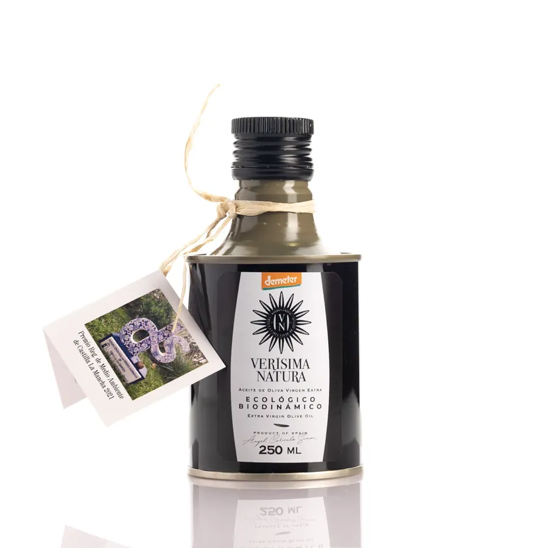
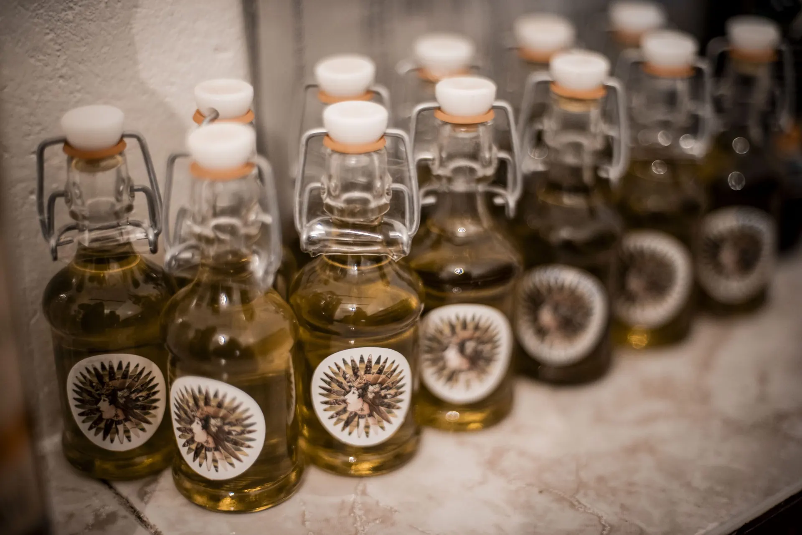
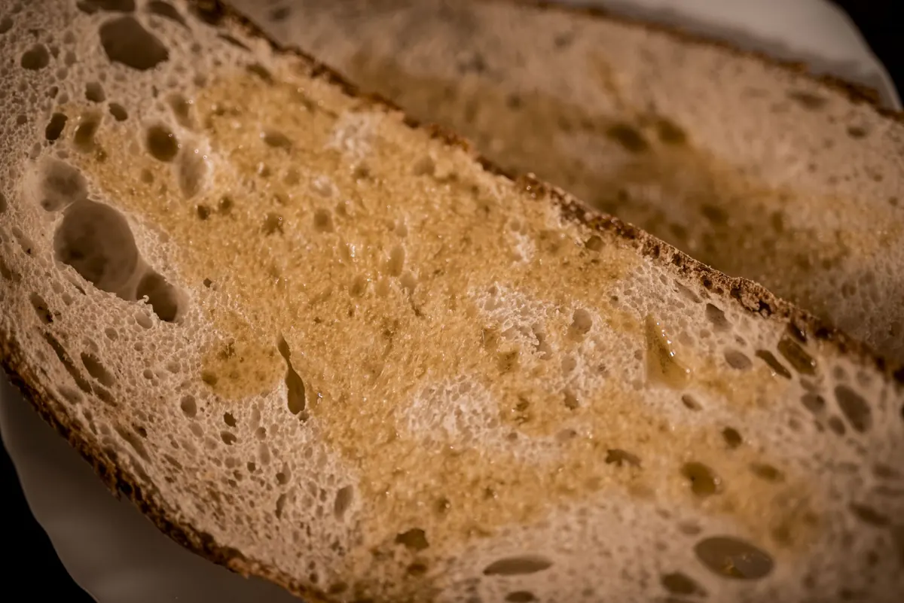
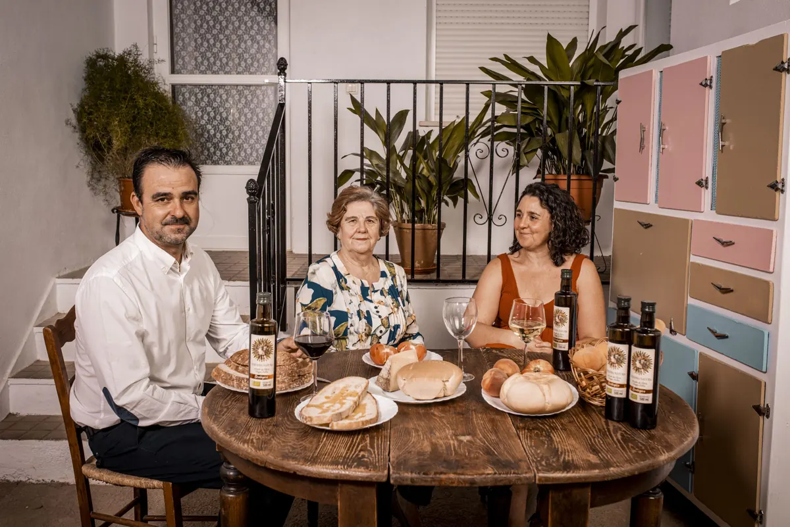
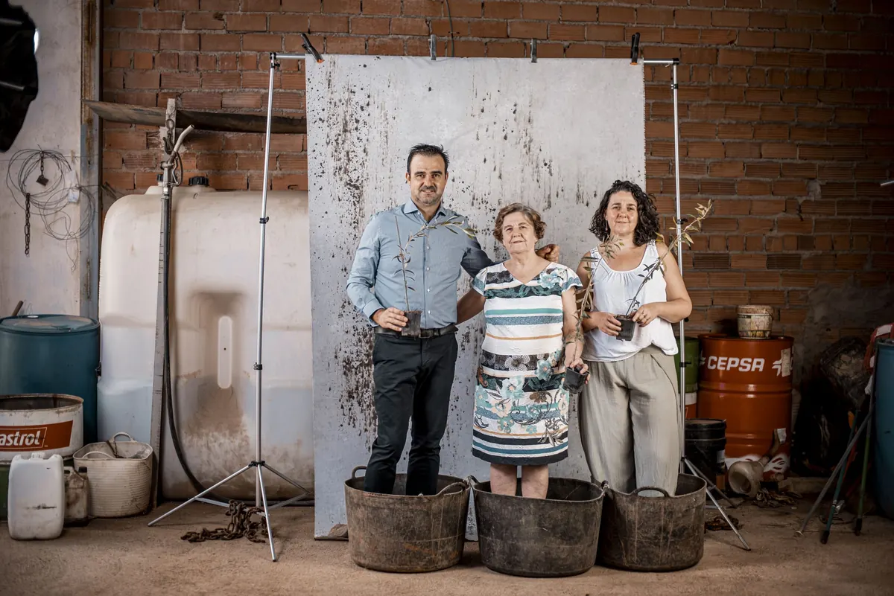
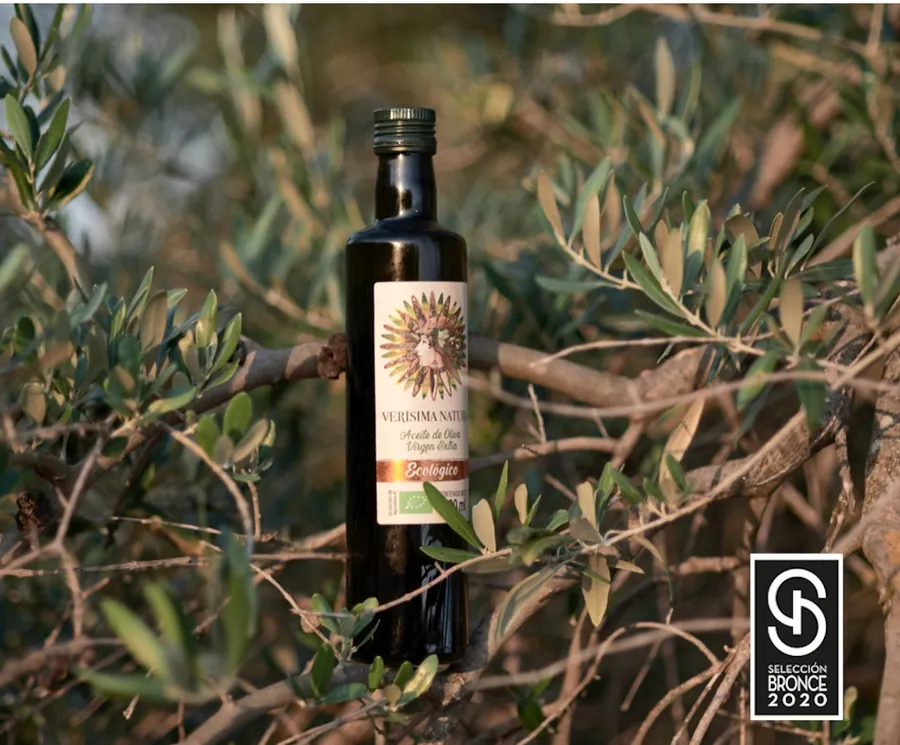
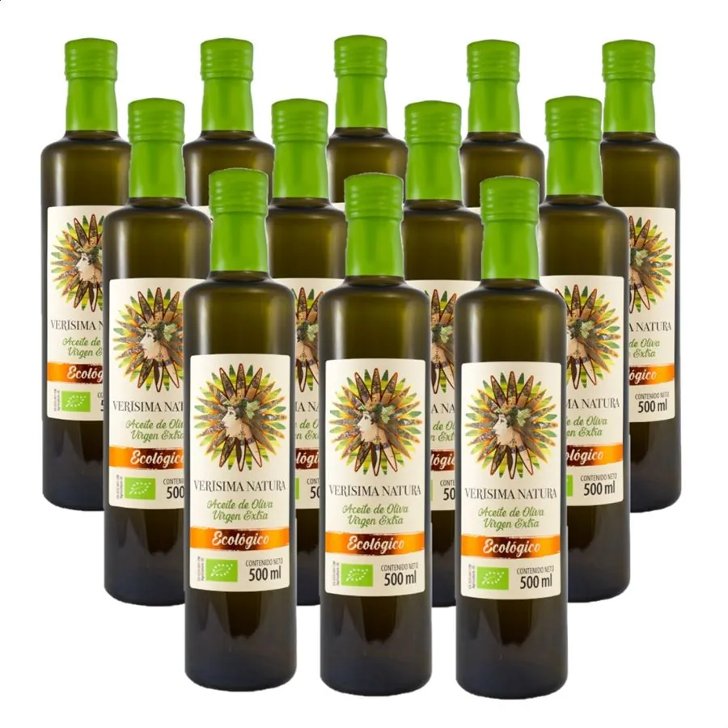
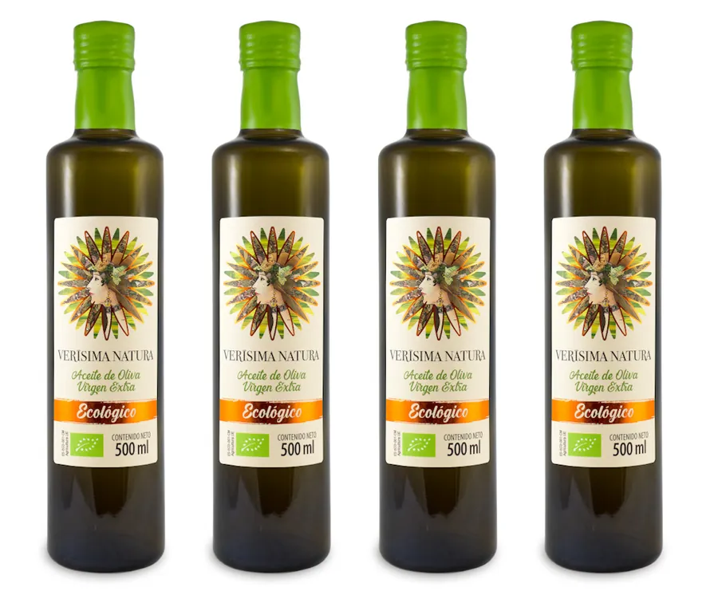
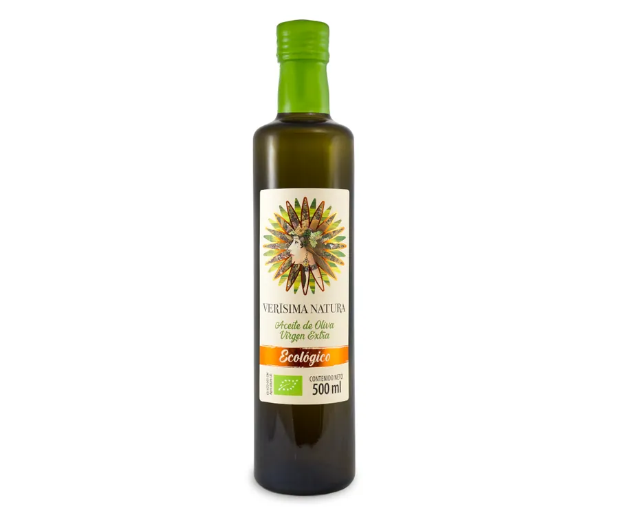

VERISIMA NATURA Biodinámico Cornicabra 250ml9,98 € IVA incluido


Ficha de cata · AOVE ecológico
Coupage de arbequina y picual. Predomina la arbequina, que le da su sabor; la picual le aporta estabilidad y resistencia a las altas temperaturas.
En nariz
Marida con

Para tomar con panVer la colección
Más de veinte años de olivar ecológicoVer la colecciónEcha cuentas
El precio por litro de cada formato, con los precios de la tienda. Toca uno para verlo.

VERISIMA NATURA Biodinámico Cornicabra 250ml AOVE Ecológico Verísima Natura 250ml – Caja 24 botellas
AOVE Ecológico Verísima Natura 250ml – Caja 24 botellas

AOVE Ecológico Verísima Natura 250ml Coupage: Arbequina, Picual
Verísima Natura 500ml – caja 12 botellas
Verísima Natura 500ml – pack 4 botellas
AOVE Ecológico Verísima Natura 500ml Coupage: Arbequina, Picual